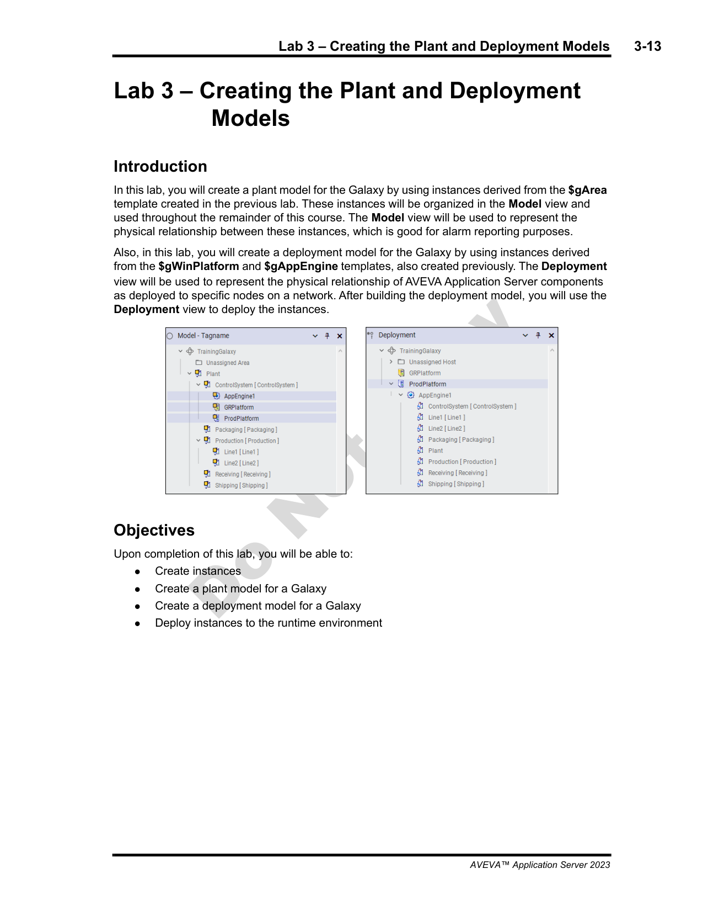
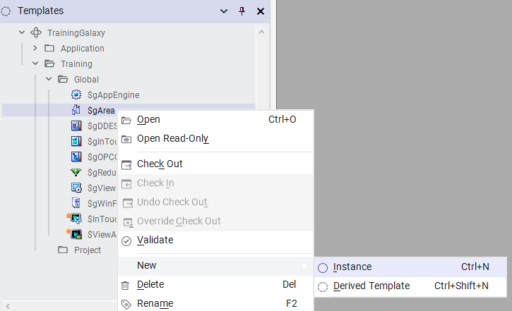
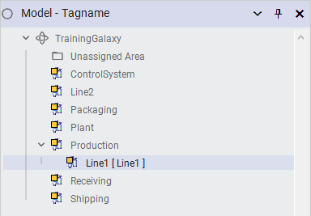
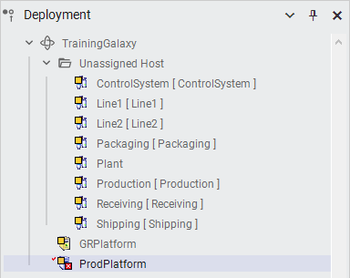
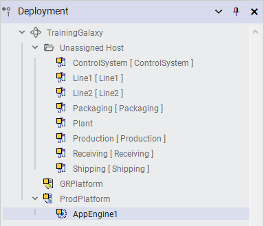
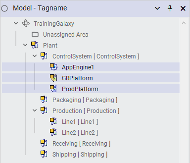
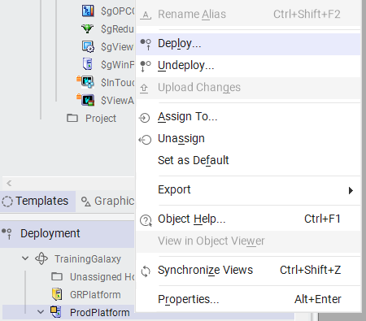
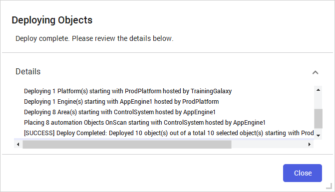

Source: AVEVA Application Server 2023 Training Manual, Module 3, Lab 3 (pages 3-13 to 3-28)
Hands-on lab — building the Plant Model hierarchy and Deployment Model, then deploying and verifying the application.
Reference: Module 3, Lab 3 (page 3-13)
$Area instances in the Model view that represents the physical plant layout$WinPlatform and $AppEngine in the Deployment view that represent the computing infrastructure
This lab assumes you have already completed Lessons 4–6: you have a Galaxy, imported templates, and are ready to build the actual plant and deployment structure.
Reference: Module 3, Lab 3 (pages 3-14 to 3-17)
$Area objects (derived from the SgArea template) that mirrors your physical plant layout. It acts as the organizational backbone — all equipment objects live inside areas. You create instances in the Model view using the Galaxy Browser.
In the IDE, click the Model tab at the bottom of the Galaxy Browser. The Model view shows the hierarchical tree of objects. At the top you will see the Galaxy root node (named after your Galaxy — for example, TrainingGalaxy).
To create your first area, you instantiate the SgArea template:
SgArea template.$Area instance appears in the Model view.Production for a top-level production area).
Repeat the instantiation process to create all the areas that represent your plant layout. Nest sub-areas inside parent areas by creating them under the appropriate parent. The resulting Plant Model hierarchy for this lab includes:
| Area Name | Level | Purpose |
|---|---|---|
| Plant | Root | Top-level area encompassing the entire plant |
| Production | Level 1 | Production operations area |
| Line1 | Level 2 | Production Line 1 — selected in the Model view |
| Line2 | Level 2 | Production Line 2 |
| Packaging | Level 1 | Packaging area |
| Receiving | Level 1 | Material receiving area |
| Shipping | Level 1 | Shipping and dispatch area |
| ControlSystem | Level 1 | Control system infrastructure area |

$Area instances in the Model view builds the organizational hierarchy, but areas are purely structural — they do not run on their own. Equipment objects placed inside areas must still be assigned to a deployment object (an engine on a platform) to execute at runtime.
Reference: Module 3, Lab 3 (pages 3-18 to 3-23)
$WinPlatform (representing a physical or virtual computer) and one or more $AppEngine objects (representing application engines that execute object logic on that platform). You build this in the Deployment view.
Switch to the Deployment view in the Galaxy Browser. Initially, you will see:
$WinPlatform representing the target production computer (if already created, or you create it now)All your Plant Model $Area instances initially appear under Unassigned Host because they have not yet been assigned to run on any engine:
| Object | Location in Deployment View |
|---|---|
| ControlSystem, Line1, Line2, Packaging, Plant, Production, Receiving, Shipping | Under Unassigned Host |
| GRPlatform | Under Unassigned Host (Galaxy Repository platform) |
| ProdPlatform | Standalone $WinPlatform — the target deployment computer |

To provide an engine that will run the application objects:
ProdPlatform object.$AppEngine.AppEngine1.AppEngine1 now appears nested under ProdPlatform in the Deployment view.$WinPlatform → $AppEngine → equipment/area objects. The WinPlatform represents the physical computer, the AppEngine is the process that executes object logic, and the objects hosted under the engine are what actually run at runtime.
With AppEngine1 created under ProdPlatform, you now assign your area and equipment objects to the engine so they know where to run:
AppEngine1.
$WinPlatform Node Name must exactly match the network hostname of the target computer. If it does not match, the Galaxy Repository cannot connect to the target platform and deployment will fail.
Reference: Module 3, Lab 3 (page 3-25)
After creating both models and assigning objects, your Model view shows the full hierarchy with both deployment and plant structure visible:
| Path | Object Type | Purpose |
|---|---|---|
| ControlSystem > AppEngine1 | $AppEngine | Application engine running on ProdPlatform |
| ControlSystem > GRPlatform | $WinPlatform | Galaxy Repository platform |
| ControlSystem > ProdPlatform | $WinPlatform | Production deployment platform (the target computer) |
| Production > Line1 | $Area | Production Line 1 |
| Production > Line2 | $Area | Production Line 2 |
| Packaging | $Area | Packaging area |
| Receiving | $Area | Material receiving area |
| Shipping | $Area | Shipping and dispatch area |

Reference: Module 3, Lab 3 (pages 3-26 to 3-28)
ProdPlatform object.
The Deploy dialog lists all objects that will be deployed:
| Column | Meaning |
|---|---|
| Object Name | The full path of each object being deployed |
| Object Type | The template type (e.g., $WinPlatform, $AppEngine, $Area) |
| Status | Current deployment state — Deploying, Deployed, OnScan, or Error |
During deployment, the dialog shows real-time progress. Objects transition through these states:
| Indicator | Meaning |
|---|---|
| Deploying | Object is being pushed to the target platform |
| OnScan | Object is deployed and actively scanning (running normally) |
| Error | Deployment failed — check the Output pane for details |

ProdPlatform, AppEngine1, and 8 area objects (Plant, Production, Line1, Line2, Packaging, Receiving, Shipping, ControlSystem). All objects reached the OnScan state, meaning they are deployed and running successfully.
$WinPlatform Node Name exactly matches the target computer's network hostname. Case sensitivity matters!
Q1: What is the primary purpose of the Plant Model in Application Server?
The Plant Model is a hierarchy of $Area instances (created from the SgArea template) that represents the physical layout of the plant. It provides organizational structure for all equipment objects — areas like Plant, Production, Line1, Line2, Packaging, Receiving, Shipping, and ControlSystem.
Q2: What two key object types make up the Deployment Model?
$WinPlatform (representing a physical or virtual computer) and $AppEngine (representing an application engine that runs object logic on that platform). Together they form the hosting chain: $WinPlatform → $AppEngine → hosted objects.
Q3: When you first create area objects, where do they appear in the Deployment view before being assigned?
They appear under Unassigned Host in the Deployment view. This is a container for objects that have not yet been assigned to a specific platform and engine. You must explicitly assign them to an engine (like AppEngine1) for them to run at runtime.
Q4: How do you initiate deployment of a platform in the Deployment view?
Right-click the $WinPlatform object (e.g., ProdPlatform) and select Deploy... from the context menu. The Deploying Objects dialog opens, listing all objects to be deployed.
Q5: In this lab, how many objects were deployed and what does the "OnScan" status mean?
10 objects were deployed: ProdPlatform, AppEngine1, and 8 area objects. The OnScan status means the object is deployed and actively scanning (running normally) — it is the healthy running state for a deployed object.
Click each answer to reveal it.
$Area instances (from the SgArea template) to mirror the physical plant layout — created in the Model view.$WinPlatform (computer) and $AppEngine (engine) objects — created in the Deployment view.$WinPlatform Node Name must match the target computer's hostname exactly.Next: Lesson 8 — OCMC and Runtime Operations